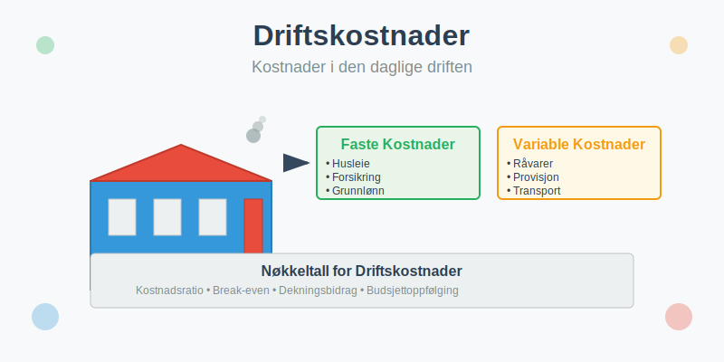
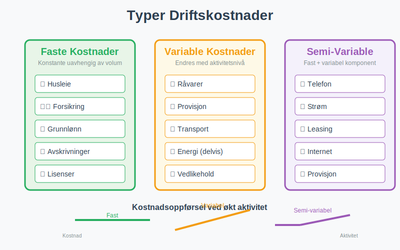
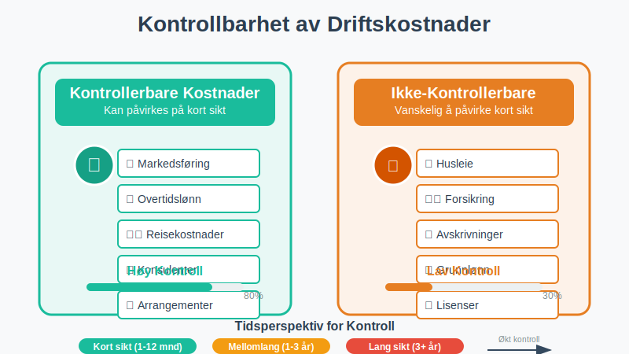
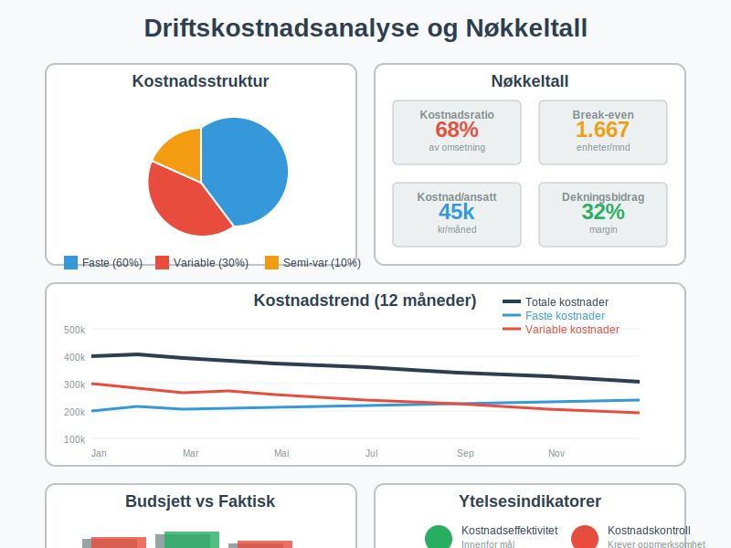
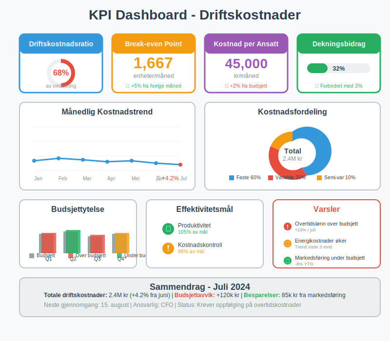

Driftskostnader er alle kostnader som påløper i den daglige driften av en virksomhet. Dette omfatter både faste kostnader og variable kostnader som er nødvendige for å opprettholde forretningsaktiviteten og generere inntekter. Forståelse av driftskostnader er essensielt for budsjettering, kostnadsanalyse og effektiv regnskapsføring.
Driftskostnader utgjør en viktig del av det bredere kostnadsbegrepet kostpris, som omfatter alle kostnader knyttet til anskaffelse, produksjon og levering av varer og tjenester.

Hva er Driftskostnader?
Driftskostnader representerer alle løpende utgifter som en virksomhet har for å drive sin ordinære forretningsaktivitet. Disse kostnadene er direkte knyttet til den daglige driften og skiller seg fra investeringskostnader og finanskostnader.
Kjennetegn ved Driftskostnader
- Løpende karakter: Påløper regelmessig i driftsperioden
- Nødvendige for drift: Essensielle for å opprettholde forretningsaktiviteten
- Resultatpåvirkning: Reduserer bruttofortjeneste og driftsresultat
- Skattemessig fradrag: Kan trekkes fra i skattegrunnlaget
- Periodisering: Skal føres i den perioden de påløper
Typer Driftskostnader
Driftskostnader kan klassifiseres på flere måter avhengig av deres karakter og oppførsel i forhold til aktivitetsnivået.

Faste Driftskostnader
Faste kostnader forblir konstante uavhengig av produksjons- eller aktivitetsnivået innenfor et relevant område.
For mer om faste kostnader generelt, se Faste kostnader.
Eksempler på Faste Driftskostnader:
- Husleie og lokalkostnader (inkludert hjemmekontorkostnader)
- Forsikringspremier
- Grunnlønn til ansatte
- Avskrivninger
- Lisenser og abonnementer
- Regnskaps- og revisjonshonorarer
Variable Driftskostnader
Variable kostnader endres proporsjonalt med aktivitets- eller produksjonsvolum.
Eksempler på Variable Driftskostnader:
-
Råvarer og materialer
-
Provisjonslønn
-
Frakt- og transportkostnader (dokumentert med fraktbrev)
-
Energikostnader (delvis): se Konto 6200 - Elektrisitet
-
Drivstoff: se Konto 7000 - Drivstoff
-
Vedlikeholdskostnader (inkludert renhold)
-
Salgsprovisjon: se Konto 7200 - Provisjonskostnader, oppgavepliktig
Semi-Variable Driftskostnader
Semi-variable kostnader har både en fast og en variabel komponent.
Eksempler på Semi-Variable Kostnader:
- Telefonregninger: Fast abonnement + variabel bruk
- Strømregninger: Fast nettleie + variabel forbruk. Se Konto 6200 - Elektrisitet
- Leasingavtaler: Fast grunnleie + variabel kilometerbasert kostnad
Klassifisering av Driftskostnader
Etter Funksjon
Driftskostnader kan grupperes etter hvilken funksjon de støtter i virksomheten:
| Funksjon | Kostnadstyper | Eksempler |
|---|---|---|
| Produksjon | Direkte og indirekte produksjonskostnader | Råvarer, produksjonslønn, maskindrift |
| Salg | Salgskostnader | Markedsføring, salgsprovisjon, messer |
| Administrasjon | Administrative kostnader | Kontorhold, ledelse, IT-systemer |
| Distribusjon | Distribusjonskostnader | Frakt, lager, emballasje |
Etter Kontrollbarhet

Kontrollerbare Kostnader
Kostnader som ledelsen kan påvirke på kort sikt:
- Markedsføringskostnader
- Overtidslønn
- Reisekostnader
- Konsulenthonorar
Ikke-Kontrollerbare Kostnader
Kostnader som er vanskelige å påvirke på kort sikt:
- Husleie (ved langsiktige kontrakter)
- Forsikringspremier
- Avskrivninger
- Grunnlønn
Regnskapsføring av Driftskostnader
Grunnleggende Prinsipper
Driftskostnader skal regnskapsføres i henhold til opptjeningsprinsippet og sammenstillingsprinsippet:
- Periodisering: Kostnader føres når de påløper, ikke når de betales
- Sammenstilling: Kostnader matches mot tilhørende inntekter
- Forsiktighet: Usikre kostnader skal hensyntas
Skattemessige Forhold
De fleste driftskostnader er fradragsberettigede i skatteregnskapet, men det er viktige regler og begrensninger å være oppmerksom på. For en omfattende gjennomgang av reglene for skattefradrag, se vår detaljerte guide om fradrag i regnskap.
Typiske Kontoer for Driftskostnader
| Kontotype | Kontonummer | Beskrivelse |
|---|---|---|
| Lønn og sosiale kostnader | 5000-5999 | Lønnskostnader, arbeidsgiveravgift, feriepenger, pensjon. Se også Konto 5500 - Annen kostnadsgodtgjørelse |
| Andre driftskostnader | 6000-6999 | Husleie, forsikring, vedlikehold |
| Avskrivninger | 7000-7999 | Ordinære avskrivninger |
| Finanskostnader | 8000-8999 | Rentekostnader, valutaforskjeller |
Eksempel på Regnskapsføring
Månedlig husleie på 50.000 kr:
Debet: 6100 Husleie lokaler 50.000
Kredit: 2400 Leverandørgjeld 50.000
Lønnsutbetaling på 200.000 kr:
Debet: 5000 Lønn 200.000
Kredit: 1900 Bankinnskudd 200.000
Driftskostnadsanalyse
Kostnadsstrukturanalyse
Analyse av driftskostnader gir viktig innsikt i virksomhetens kostnadsstruktur og lønnsomhet.

Viktige Nøkkeltall:
- Driftskostnader i % av omsetning
- Faste kostnader i % av totale driftskostnader
- Variable kostnader per enhet
- Dekningsbidrag per produkt/tjeneste
Break-Even Analyse
Break-even punktet viser hvor mye virksomheten må selge for å dekke alle driftskostnader:
Break-even = Faste kostnader ÷ (Salgspris per enhet - Variable kostnader per enhet)
Eksempel: Break-Even Beregning
En virksomhet har:
- Faste driftskostnader: 500.000 kr/måned
- Variable kostnader: 200 kr per enhet
- Salgspris: 500 kr per enhet
Beregning:
- Dekningsbidrag per enhet: 500 - 200 = 300 kr
- Break-even: 500.000 ÷ 300 = 1.667 enheter per måned
Budsjettering av Driftskostnader
Budsjettplanlegging
Effektiv budsjettering av driftskostnader krever:
- Historisk analyse: Gjennomgang av tidligere års kostnader
- Trendanalyse: Identifisering av kostnadstrender
- Aktivitetsbasert budsjettering: Kobling til forventet aktivitetsnivå
- Scenarioplanlegging: Budsjetter for ulike aktivitetsnivåer
Budsjettoppfølging
| Måned | Budsjett | Faktisk | Avvik | Avvik % |
|---|---|---|---|---|
| Januar | 450.000 | 465.000 | 15.000 | 3,3% |
| Februar | 450.000 | 442.000 | -8.000 | -1,8% |
| Mars | 460.000 | 478.000 | 18.000 | 3,9% |
| Q1 Total | 1.360.000 | 1.385.000 | 25.000 | 1,8% |
Optimalisering av Driftskostnader
Strategier for Kostnadsreduksjon
Kortsiktige Tiltak:
- Forhandling med leverandører
- Energibesparende tiltak
- Reduksjon av ikke-essensielle kostnader
- Forbedret lagerstyring
Langsiktige Tiltak:
- Automatisering av prosesser
- Outsourcing av ikke-kjerneaktiviteter
- Investering i energieffektive løsninger
- Omorganisering av arbeidsflyt
Kostnads-Nytte Analyse
Ved vurdering av kostnadstiltak bør man analysere:
- Besparelsespotensial
- Implementeringskostnader
- Risiko for kvalitetsreduksjon
- Påvirkning på kundetilfredshet
- Langsiktige konsekvenser
Driftskostnader vs. Andre Kostnadstyper
Sammenligning av Kostnadstyper
| Kostnadstype | Karakter | Regnskapsføring | Eksempler |
|---|---|---|---|
| Driftskostnader | Løpende, ordinære | Resultatregnskap | Lønn, husleie, råvarer |
| Investeringskostnader | Engangskostnader | Balanse (aktiveres) | Maskiner, bygninger |
| Finanskostnader | Finansieringsrelaterte | Resultatregnskap | Renter, valutaforskjeller |
| Ekstraordinære kostnader | Sjeldne, uvanlige | Resultatregnskap | Naturskader, omstrukturering |
Skattemessige Aspekter
Fradragsrett for Driftskostnader
Generelle vilkår for fradrag:
- Kostnaden må være pådratt for å erverve inntekt
- Kostnaden må være faktisk påløpt
- Kostnaden må være rimelig og nødvendig
- Kostnaden må være dokumentert
Ikke-Fradragsberettigede Kostnader
Enkelte driftskostnader gir ikke skattemessig fradrag:
- Representasjon over visse grenser
- Private kostnader blandet med bedriftskostnader
- Bøter og straffer
- Gaver over fastsatte grenser
Rapportering og Analyse
Månedlig Driftskostnadsrapport
En strukturert rapportering bør inneholde:
Kostnadsoversikt:
- Totale driftskostnader
- Fordeling på kostnadskategorier
- Sammenligning med budsjett
- Sammenligning med foregående periode
Nøkkelanalyser:
- Kostnader per ansatt
- Kostnader i % av omsetning
- Utvikling i kostnadsnivå
- Identifisering av kostnadsdriver
KPI-er for Driftskostnader

Viktige Nøkkeltall:
- Driftskostnadsratio: Driftskostnader ÷ Omsetning
- Kostnad per kunde: Totale driftskostnader ÷ Antall kunder
- Produktivitetsindeks: Omsetning ÷ Antall ansatte
- Kostnadseffektivitet: Driftskostnader ÷ Produserte enheter
Digitalisering og Driftskostnader
Moderne Verktøy for Kostnadsstyring
- ERP-systemer: Integrert kostnadsstyring
- Automatisert bilagsføring: Reduserte administrative kostnader
- Prediktiv analyse: Forbedret budsjettplanlegging
- Dashboards: Sanntids kostnadsoversikt
Fremtidige Trender
- Kunstig intelligens i kostnadsoptimalisering
- Automatisering av rutineoppgaver
- Bærekraftige driftskostnader
- Aktivitetsbasert kostnadsmodellering
Konklusjon
Driftskostnader er en fundamental del av enhver virksomhets økonomi og krever kontinuerlig oppmerksomhet og styring. Effektiv håndtering av driftskostnader gjennom:
- Systematisk klassifisering og registrering
- Regelmessig analyse og oppfølging
- Proaktiv budsjettering og planlegging
- Kontinuerlig optimalisering av kostnadsnivå
Dette sikrer ikke bare god regnskapsføring, men også grunnlag for strategiske beslutninger og langsiktig lønnsomhet. Ved å forstå sammenhengen mellom driftskostnader og dekningsbidrag, kan virksomheter ta informerte beslutninger om prissetting, produktmiks og investeringer.
Moderne teknologi og digitale verktøy gjør det enklere enn noen gang å overvåke, analysere og optimalisere driftskostnader, noe som gir konkurransefortrinn til virksomheter som utnytter disse mulighetene effektivt.